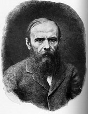

dostlife.shtml

Fyodor Mikhailovich Dostoyevsky (1821-1881)
Biography:
Born in Moscow on October 30, 1821 in Moscow, Fyodor Mikhailovich Dostoyevsky was the second of a family of seven children. His mother died in 1837, and his father was murdered but two years later while he attended private boarding school in Moscow. From 1838 to 1843 he studied at the Military Engineering College in St. Petersburg, graduating with the rank of officer. The publication of his first novel, Poor Folk (1846), was met with success and hailed by the liberal critics Belinsky and Nekrasov. IN 1849, Dostoevsky, along with several other young intellectuals, was arrested and sentenced to death for his involvement in the socialist-oriented 'Petrashevsky Circle,' although the degree of his actual involvement in this movement is a debatable point. Though he received reprieve from death, he was sentenced to penal servitude, and until 1854 lived in a convict prison in Omsk, Siberia, an experience bearing a profound effect, both on his writing and his personal spirituality.
Upon his return to European Russia, he began publishing again, culling Memoirs from the House of the Dead (1861) from his prison experience, and also founded such literary journals as Vremya and Epoch with his older brother Mikhail. Soon after the two began work on Vremya, both Dostoevsky's first wife and his elder brother passed away, leaving him with considerable debts, and in this terrible year of 1864 he emerged with his revolutionary work Notes from Underground. He confronted his financial issues by sitting down to work on the first of his four great novels, Crime and Punishment (1866), although he also spent a good deal of time traveling in Western Europe (developing a relatively anti-European outlook), gambled considerably, and had an affair with the young Mlle Suslova. He married the young Anna Grigoryevna Snitkina in 1867, and the two lived abroad for four years, in which time he completed The Idiot (1860) and The Demons (1871). Viewed by many to be his masterpiece, The Brothers Karamazov was completed in 1880, and in the same year he delivered his famous address at the unveiling of the Pushkin Memorial, achieving considerable literary success in his own lifetime. He died but six months later on January 28, 1821.
Works:
Poor Folk (1846)
The Double (1846)
The Landlady (1847)
Netochka Nezvanovna (1849)
The Manor of Stepanchikova (1859)
The Humiliated and Insulted (1861)
Memoirs from the House of the Dead (1861)
Winter Notes on Summer Impressions (1863)
Notes from Underground (1864)
Crime and Punishment (1866)
The Gambler (1866)
The Idiot (1869)
The Eternal Husband (1870)
The Demons (1871)
The Adolescent (1875)
An Author's Diary (1876-1881)
The Brothers Karamazov (1880)